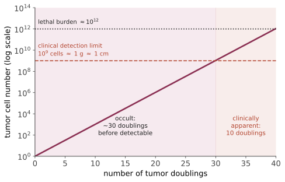

本页目录
病理 IV · 肿瘤：从突变到转移
肿瘤学是病理学总论中最独立的一块，因为它有自己的一套逻辑：体细胞演化。肿瘤不是"细胞疯了"，而是在人体内进行的、以增殖为适应度的达尔文过程——🔗 生命的逻辑站演化线给出了这个过程的形式化（选择系数、克隆干涉），本页讲医学侧。
1. 命名法：先把词读懂
| 来源 | 良性 | 恶性 |
|---|---|---|
| 上皮 | 腺瘤 adenoma、乳头状瘤 | 癌 carcinoma（腺癌、鳞癌） |
| 间叶 | 脂肪瘤、平滑肌瘤、纤维瘤 | 肉瘤 sarcoma（脂肪肉瘤、平滑肌肉瘤、骨肉瘤） |
| 血液/淋巴 | — | 白血病、淋巴瘤 |
| 多胚层 | 成熟畸胎瘤 | 未成熟畸胎瘤 |
几个不守规则的名字要单独记：黑色素瘤、淋巴瘤、精原细胞瘤、间皮瘤——名字像良性，全部是恶性。"母细胞瘤 -blastoma"（神经母细胞瘤、肾母细胞瘤、视网膜母细胞瘤）多为儿童恶性肿瘤。
错构瘤 hamartoma（正常组织的异常排列）与迷芽瘤 choristoma（正常组织长在异位）不是真肿瘤。
2. 良恶性鉴别：四个维度
| 维度 | 良性 | 恶性 |
|---|---|---|
| 分化 | 好，接近来源组织 | 差到不等（间变 anaplasia = 极度分化差：核大深染、核浆比↑、多核瘤巨细胞、病理性核分裂象） |
| 生长速度 | 慢 | 快，常有坏死与出血（长得比血管快） |
| 局部侵袭 | 包膜、膨胀性生长 | 浸润性、突破基底膜、无包膜 |
| 转移 | 无 | 有（转移是恶性的绝对判据） |
"是否突破基底膜"是原位癌与浸润癌的分界（第 02 页）——这一条决定了能否转移，因而决定预后与治疗强度。
3. 癌症的十大特征（Hanahan & Weinberg）
2000 年提出六项、2011 年扩至十项、2022 年再增四项。这是当代肿瘤学的组织框架：
核心六项：① 自给自足的生长信号；② 逃避生长抑制信号；③ 抵抗细胞死亡；④ 无限复制潜能（端粒酶重激活）；⑤ 持续血管新生（VEGF）；⑥ 侵袭与转移。
扩展：⑦ 代谢重编程（Warburg 效应：即使有氧也走糖酵解——为增殖提供生物合成前体而非仅仅 ATP；这是 PET-CT 用 ¹⁸F-FDG 显像的原理）；⑧ 逃避免疫破坏（第 09 页与第 23 页）；⑨ 基因组不稳定性（使能特征）；⑩ 促瘤性炎症（使能特征）。
2022 新增：表型可塑性、非突变表观遗传重编程、多态性微生物组、衰老细胞的作用。
4. 驱动基因的三类
① 原癌基因 → 癌基因（功能获得，显性，一个等位基因突变即可）：
| 基因 | 类型 | 相关肿瘤 | 靶向药 |
|---|---|---|---|
| RAS（KRAS/NRAS/HRAS） | GTP 酶（卡在活性态） | 胰腺 90%、结肠 40%、肺 | KRAS G12C 抑制剂（sotorasib 等） |
| MYC | 转录因子 | Burkitt 淋巴瘤 t(8;14) | 长期"不可成药" |
| HER2/ERBB2 | 受体酪氨酸激酶（扩增） | 乳腺、胃 | 曲妥珠单抗、ADC |
| EGFR | RTK | 肺腺癌（尤其非吸烟亚裔） | 奥希替尼等 |
| ALK 融合 | RTK | 肺腺癌 | 克唑替尼/阿来替尼 |
| BCR-ABL t(9;22) | 融合激酶 | 慢粒 CML | 伊马替尼（靶向治疗的原型胜利） |
| BRAF V600E | 丝苏氨酸激酶 | 黑色素瘤、甲状腺 | 维莫非尼 + MEK 抑制剂 |
② 抑癌基因（功能丧失，通常需两次打击，Knudson 假说）：
- TP53（"基因组卫士"）——超过半数人类肿瘤中失活；正常时 DNA 损伤 → p53 ↑ → p21 → G1 阻滞 / 修复 / 凋亡。胚系突变 = Li–Fraumeni 综合征；
- RB——细胞周期 G1/S 检查点的守门人；胚系突变 = 遗传性视网膜母细胞瘤（Knudson 的原始模型）；
- APC——Wnt 通路；胚系突变 = 家族性腺瘤性息肉病，几乎必然癌变；
- BRCA1/2——同源重组修复；胚系突变 = 乳腺/卵巢癌高风险，且是 PARP 抑制剂"合成致死"的靶点（见下）；
- PTEN、VHL、NF1/2、CDKN2A。
③ DNA 修复基因缺陷（"突变者"表型）：错配修复 MMR（Lynch 综合征，表现为微卫星不稳定 MSI-H）、核苷酸切除修复（着色性干皮病）、同源重组（BRCA）。MSI-H/dMMR 现在是跨癌种使用免疫检查点抑制剂的适应证——这是"按分子特征而非器官"用药的第一个成功范例。
合成致死（synthetic lethality）值得单独理解：BRCA 缺陷细胞已失去同源重组修复；再用 PARP 抑制剂堵住碱基切除修复 → 两条路都断 → 肿瘤细胞死而正常细胞（BRCA 完好）存活。这是"利用肿瘤的弱点而非它的强点"的思路。
5. 多步骤癌变与克隆演化

经典模型是结直肠癌的腺瘤-癌序列：正常上皮 →（APC 失活）→ 早期腺瘤 →（KRAS）→ 中期腺瘤 →（SMAD4/DCC 丢失）→ 晚期腺瘤 →（TP53 失活）→ 癌 →（更多改变）→ 转移。平均需要数十年——这正是结肠镜切除息肉能预防癌症的机制基础。
克隆演化与瘤内异质性：肿瘤不是单一克隆，而是分支演化的谱系树。含义有三：① 单点活检可能漏掉关键亚克隆；② 靶向治疗的耐药几乎必然——治疗本身是选择压力，抗性亚克隆被富集（如 EGFR-TKI 后的 T790M、C797S）；③ "癌症干细胞"假说认为少数具自我更新能力的细胞驱动复发。
为什么癌症主要是老年病：多打击模型 + 突变随时间累积。Armitage–Doll 模型给出发病率随年龄的幂律 \(I(t) \propto t^{k-1}\)，\(k\) 为所需打击数——从流行病学曲线可以反推驱动事件数目，这是数学与病理学结合得最漂亮的地方之一。
Peto 悖论（大型动物细胞多、寿命长，癌症却不更多）提示存在物种层面的抑癌机制——大象有 20 份 TP53 拷贝。🔗 生命的逻辑站演化线有详述。
6. 侵袭与转移：一个低效的多步骤过程
侵袭四步：① E-cadherin 丢失（细胞松开彼此，上皮-间质转化 EMT）；② 黏附到基质（层粘连蛋白/纤连蛋白受体）；③ 降解基质（MMPs）；④ 迁移。
转移级联：局部侵袭 → 进入血管/淋巴管（intravasation）→ 在循环中存活（多数被剪切力与 NK 细胞消灭）→ 黏附并外渗 → 在异地存活与增殖（定植）。
这个过程极其低效：进入循环的肿瘤细胞中只有极小比例形成转移灶。限速步骤是定植而不是播散——所以"癌细胞进入血液"本身不等于转移。
"种子与土壤"（Paget）与转移的器官偏好：一部分由解剖引流决定（结肠 → 门静脉 → 肝；多数实体瘤 → 腔静脉 → 肺；前列腺 → Batson 椎静脉丛 → 脊柱），另一部分由微环境适配决定（乳腺癌与前列腺癌偏好骨；前列腺癌骨转移是成骨性，多数其他癌是溶骨性）。转移前生态位（pre-metastatic niche）：原发瘤分泌的外泌体先行改造远处器官——这是近十五年的重要发现。
7. 分级、分期与预后
- 分级 grade：分化程度（细胞学，Ⅰ–Ⅳ 级或高/低级别）；
- 分期 stage：解剖扩散范围，TNM（T 原发灶大小/浸润深度、N 区域淋巴结、M 远处转移）。
分期对预后的影响远大于分级——这是肿瘤学最稳固的经验规律之一，也是筛查的全部理由（把诊断从高期移到低期）。但请立刻对照 🔗 从症状到决策站第 03 页：分期前移不等于死亡率下降（领先时间偏倚），二者的区分是循证肿瘤学的核心训练。
8. 副肿瘤综合征与肿瘤标志物
副肿瘤综合征：与肿瘤负荷或转移无关的全身表现，可先于肿瘤发现——
| 综合征 | 机制 | 常见原发 |
|---|---|---|
| 高钙血症 | PTHrP 分泌 | 肺鳞癌、乳腺、肾 |
| 库欣综合征 | 异位 ACTH | 小细胞肺癌 |
| 低钠（SIADH） | 异位 ADH | 小细胞肺癌 |
| Lambert–Eaton | 抗 P/Q 型钙通道抗体 | 小细胞肺癌 |
| 游走性血栓性静脉炎（Trousseau） | 促凝物质 | 胰腺癌、腺癌 |
| 黑棘皮病 | 生长因子 | 胃癌 |
肿瘤标志物的正确用法（一个常见误区）：绝大多数标志物不适合用于普通人群筛查，因为在低患病率人群中阳性预测值极低（🔗 从症状到决策站第 01–03 页的贝叶斯论证）。它们的合理用途是已确诊者的疗效监测与复发监测。例外与部分例外：AFP（高危肝癌人群监测）、PSA（争议最大，见姊妹站第 17 页）、CA-125（不推荐用于一般人群卵巢癌筛查）。
线二完。下一线转向免疫与感染：身体与病原体的军备竞赛，以及这套防御系统攻击自己时会发生什么。